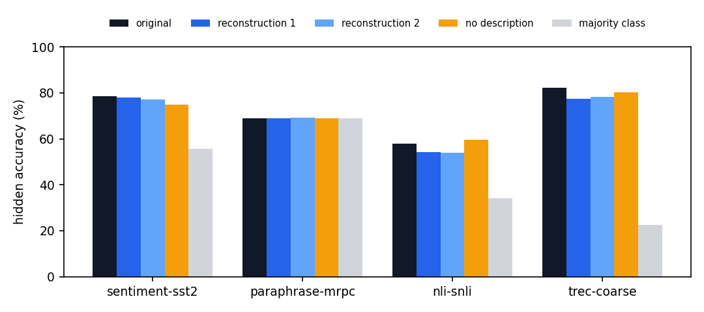
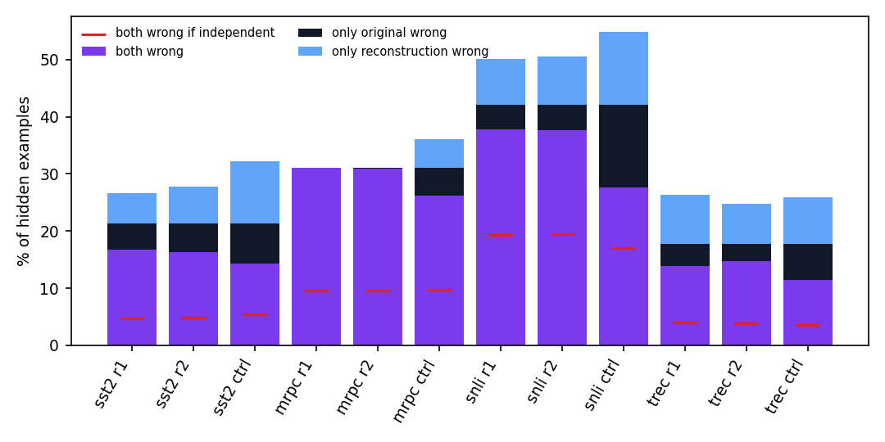

Bottom line. A description of at most 200 words, written by Opus 5.5 from the program file, was enough for a fresh Opus 5.5 session to rebuild a program with exact accuracy and nearly the original's parameter count on all 13 generated tasks, and hidden accuracy within 5 points of the original on the 4 dataset tasks, with most of the original's errors repeated. The no-description control is also exact on the 13 generated tasks, but with 2043 times the parameters on a geometric mean, so on those tasks the description transmits how compact the design is, not whether it works.
Sets. Visible: the 200 seed-0 examples that every attempt in the original runs was scored on (the reconstructors also see this score). Hidden: generated tasks use 2,000 fresh examples from an unseen seed (987654321, as in experiments/evolve/heldout_fresh_seed.py); dataset tasks use up to 2,000 training rows outside the 2,000-example pool the agents saw (1,668 for MRPC, which has no more). Extra: generated tasks only, 20,000 more fresh examples, to find rare errors. One standard error on 2,000 examples is about 1 point, so differences under 2 points on hidden accuracy are noise.
Summarizer. Headless claude -p --model claude-opus-5-5 --restricted --tools Read in a folder containing only the program file and asked for at most 200 words on the algorithm, practical hints and known imperfections, with no code and no tensor values. Over-length outputs were sent back to shorten.
Reconstructor. A fresh headless Opus 5.5 session in a sandbox outside any repo with the template interpretable_transformer.py, src/ and the description in the prompt, plus the task statement, the original's visible accuracy and parameter count, and the repo's rules (no training, no external computation, no fitting to dataset examples). Only the scoring command could be run; the final program is the saved snapshot with the highest visible accuracy (ties to fewest parameters), the rule used for the originals. For 2 reconstructions (nli-snli-r1, trec-coarse-r1) the agent's saved copies were truncated, so the agent's last working file was used.
Audits. All 34 of 34 final reconstructions and all 17 of 17 controls are data-independent under the repo's counterfactual audit (experiments/evolve/audit_data_use.py); no transcript read outside its sandbox. Agents tried to write scratch files in /tmp, which were refused (47 refused calls over the reconstructions).
Table 1. Accuracy (%) as visible / hidden / extra (extra only for generated tasks); differences to the original in parentheses. Words = length of the description.
| task | words | original | reconstruction 1 | reconstruction 2 | no description | ||||
|---|---|---|---|---|---|---|---|---|---|
| visible / hidden / extra | params | visible / hidden / extra | params | visible / hidden / extra | params | visible / hidden / extra | params | ||
| addition-five-digits | 198 | 100.0 / 100.0 / 100.0 | 27 | 100.0 / 100.0 / 100.0 | 27 | 100.0 / 100.0 / 100.0 | 25 | 100.0 / 100.0 / 100.0 | 19,744 |
| boolean-circuit-5-bits | 186 | 100.0 / 100.0 / 100.0 | 51 | 100.0 / 100.0 / 100.0 | 49 | 100.0 / 100.0 / 100.0 | 57 | 100.0 / 100.0 / 100.0 | 11,376 |
| date-normalization | 196 | 100.0 / 100.0 / 100.0 | 345 | 100.0 / 100.0 / 100.0 | 7,708 | 100.0 / 100.0 / 100.0 | 9,174 | 100.0 / 100.0 / 100.0 | 959,616 |
| decimal-to-binary-8bit | 190 | 100.0 / 100.0 / 100.0 | 89 | 100.0 / 100.0 / 100.0 | 89 | 100.0 / 100.0 / 100.0 | 432 | 100.0 / 100.0 / 100.0 | 150,976 |
| digit-counting-10 | 200 | 100.0 / 100.0 / 100.0 | 75 | 100.0 / 100.0 / 100.0 | 150 | 100.0 / 100.0 / 100.0 | 186 | 100.0 / 100.0 / 100.0 | 102,408 |
| edit-distance-8 | 200 | 100.0 / 100.0 / 100.0 | 507 | 100.0 / 100.0 / 100.0 | 507 | 100.0 / 100.0 / 100.0 | 471 | 100.0 / 100.0 / 100.0 | 5,210,704 |
| gcd-three-digits | 189 | 100.0 / 100.0 / 100.0 | 332 | 100.0 / 100.0 / 100.0 | 612 | 100.0 / 100.0 / 100.0 | 1,344 | 100.0 / 100.0 / 100.0 | 36,581,077 |
| linear-interpolation-two-points | 186 | 100.0 / 100.0 / 100.0 | 864 | 100.0 / 100.0 / 100.0 | 1,026 | 100.0 / 100.0 / 100.0 | 864 | 100.0 / 100.0 / 100.0 | 200,640 |
| multiplication-five-digits | 190 | 100.0 / 100.0 / 100.0 | 304 | 100.0 / 100.0 / 100.0 | 434 | 100.0 / 100.0 / 100.0 | 490 | 100.0 / 100.0 / 100.0 | 249,344 |
| parity-upto10-bits | 188 | 100.0 / 100.0 / 100.0 | 15 | 100.0 / 100.0 / 100.0 | 15 | 100.0 / 100.0 / 100.0 | 15 | 100.0 / 100.0 / 100.0 | 149,952 |
| smallest-prime-factor | 181 | 100.0 / 100.0 / 100.0 | 2,729 | 100.0 / 100.0 / 100.0 | 7,015 | 100.0 / 100.0 / 100.0 | 7,084 | 100.0 / 100.0 / 100.0 | 868,608 |
| sort-five-digits | 185 | 100.0 / 100.0 / 100.0 | 53 | 100.0 / 100.0 / 100.0 | 53 | 100.0 / 100.0 / 100.0 | 53 | 100.0 / 100.0 / 100.0 | 51,904 |
| word-reversal-3x3 | 188 | 100.0 / 100.0 / 100.0 | 3 | 100.0 / 100.0 / 100.0 | 3 | 100.0 / 100.0 / 100.0 | 3 | 100.0 / 100.0 / 100.0 | 45,892 |
| nli-snli | 195 | 63.5 / 57.9 | 2,202,474 | 59.0 (-4.5) / 54.1 (-3.7) | 2,495,338 | 57.5 (-6.0) / 53.9 (-4.0) | 7,905,527 | 57.0 (-6.5) / 59.7 (+1.8) | 9,104,521 |
| paraphrase-mrpc | 192 | 69.5 / 68.9 | 43,032 | 69.5 / 68.9 | 38,752 | 69.5 / 69.1 (+0.1) | 42,680 | 68.0 (-1.5) / 68.8 (-0.1) | 999,087 |
| sentiment-sst2 | 195 | 80.0 / 78.6 | 497,631 | 78.0 (-2.0) / 78.0 (-0.6) | 3,434,041 | 80.0 / 77.2 (-1.4) | 2,184,811 | 76.5 (-3.5) / 74.8 (-3.8) | 32,442,262 |
| trec-coarse | 196 | 92.0 / 82.2 | 57,753 | 84.0 (-8.0) / 77.5 (-4.8) | 363,789 | 84.5 (-7.5) / 78.1 (-4.1) | 272,394 | 82.5 (-9.5) / 80.3 (-1.9) | 206,914,601 |
Fig. 1. Hidden accuracy on the dataset tasks.

Visible accuracy overstates the original on TREC (92.0 against 82.3 hidden), because the original was tuned on those 200 examples. The reconstructions, tuned with at most a few runs on the same 200, show a smaller visible-to-hidden gap (84.0 / 84.5 against 77.5 / 78.2), so the hidden difference to the original (−4.8 and −4.1) is smaller than the visible one (−8.0 and −7.5). The description cannot carry the 200-example tuning; the reconstruction lands near what the algorithm generalizes to. On SNLI the reconstructions are 3.8 and 4.0 points below the original on hidden examples and the control (59.7) is above all of them, so on SNLI and TREC the description did not help accuracy relative to starting from scratch. On SST-2 it did (hidden 78.1 and 77.2 against 74.8 for the control); on MRPC the control scores the same as the original by always answering 1.
All originals and reconstructions are exact on every example tested (22,200 per program), so accuracy and errors cannot tell them apart. Program size can. The reconstructions reproduce the original's parameter count closely: sort-five-digits 53 against 53 and 53, parity-upto10-bits 15 against 15 and 15, word-reversal-3x3 3 against 3 and 3, edit-distance-8 507 against 507 and 471 (original against reconstructions 1 and 2; full list in Table 1). 8 of 13 tasks are within a factor 2 for both reconstructions, and the largest ratio is 26.6. The control, given only the task, reaches 100% with 2043 times the original's parameters on a geometric mean (smallest ratio 223), mostly in the range of the template's 152,000-parameter default or larger. So on these tasks the 200 words carry the structure of the compressed design (which architecture, which scalar tricks), which the control runs did not reproduce. They do not show that the description is needed for exact accuracy, since the control is exact too.
Table 2. Comparison on the hidden set (last column: visible set). Kappa: agreement of the two models' outputs beyond chance given their output frequencies. Phi: correlation of the two error indicators. P(wrong | original wrong / right): error rate of the compared model on examples the original gets wrong / right; equal values mean independent errors. Both wrong: observed count against the count expected if the errors were independent.
| task | compared model | original hidden acc. | its hidden acc. | identical output (%) | kappa | phi of errors | P(wrong | original wrong / right) (%) | both wrong: observed / if independent | identical output, visible (%) |
|---|---|---|---|---|---|---|---|---|---|
| sentiment-sst2 | reconstruction 1 | 78.6 | 78.0 (-0.6) | 90.1 | 0.79 | 0.71 | 78 / 7 | 334 / 94 (of 427) | 87.0 |
| sentiment-sst2 | reconstruction 2 | 78.6 | 77.2 (-1.4) | 88.5 | 0.75 | 0.67 | 77 / 8 | 327 / 97 (of 427) | 92.0 |
| sentiment-sst2 | no description | 78.6 | 74.8 (-3.8) | 82.0 | 0.60 | 0.50 | 67 / 14 | 286 / 108 (of 427) | 82.5 |
| sentiment-sst2 | reconstruction 1 vs 2 | 91.8 | 0.82 | 0.76 | 83 / 6 | 365 / 100 (of 439) | |||
| paraphrase-mrpc | reconstruction 1 | 68.9 | 68.9 | 100.0 | 1.00 | 1.00 | 100 / 0 | 518 / 161 (of 518) | 100.0 |
| paraphrase-mrpc | reconstruction 2 | 68.9 | 69.1 (+0.1) | 99.9 | 0.99 | 1.00 | 100 / 0 | 516 / 160 (of 518) | 100.0 |
| paraphrase-mrpc | no description | 68.9 | 68.8 (-0.1) | 90.2 | 0.00 | 0.77 | 84 / 7 | 437 / 161 (of 518) | 91.5 |
| paraphrase-mrpc | reconstruction 1 vs 2 | 99.9 | 0.99 | 1.00 | 100 / 0 | 516 / 160 (of 518) | |||
| nli-snli | reconstruction 1 | 57.9 | 54.1 (-3.7) | 85.2 | 0.77 | 0.75 | 90 / 14 | 756 / 386 (of 842) | 89.0 |
| nli-snli | reconstruction 2 | 57.9 | 53.9 (-4.0) | 84.4 | 0.76 | 0.74 | 89 / 15 | 752 / 388 (of 842) | 87.0 |
| nli-snli | no description | 57.9 | 59.7 (+1.8) | 67.0 | 0.50 | 0.44 | 66 / 22 | 553 / 340 (of 842) | 70.0 |
| nli-snli | reconstruction 1 vs 2 | 97.9 | 0.97 | 0.96 | 98 / 2 | 902 / 423 (of 917) | |||
| trec-coarse | reconstruction 1 | 82.2 | 77.5 (-4.8) | 86.1 | 0.83 | 0.62 | 78 / 11 | 278 / 80 (of 355) | 85.5 |
| trec-coarse | reconstruction 2 | 82.2 | 78.1 (-4.1) | 88.9 | 0.86 | 0.69 | 83 / 9 | 296 / 78 (of 355) | 90.5 |
| trec-coarse | no description | 82.2 | 80.3 (-1.9) | 83.8 | 0.80 | 0.53 | 65 / 10 | 230 / 70 (of 355) | 84.0 |
| trec-coarse | reconstruction 1 vs 2 | 91.2 | 0.89 | 0.77 | 81 / 5 | 366 / 99 (of 451) |
Fig. 2. Error overlap on the hidden set. The red mark is the both-wrong share expected for independent errors with the same error rates.

Table 3. Per-class behaviour on the hidden set (classes in label order; SST-2 negative/positive, MRPC not paraphrase/paraphrase, SNLI entailment/neutral/contradiction, TREC ABBR/ENTY/DESC/HUM/LOC/NUM).
| task | model | recall per class (%) | predicted-class share (%) |
|---|---|---|---|
| sentiment-sst2 | original | 69 86 | 39 61 |
| sentiment-sst2 | reconstruction r1 | 65 89 | 35 65 |
| sentiment-sst2 | reconstruction r2 | 63 89 | 34 66 |
| sentiment-sst2 | no description | 52 93 | 27 73 |
| paraphrase-mrpc | original | 16 93 | 10 90 |
| paraphrase-mrpc | reconstruction r1 | 16 93 | 10 90 |
| paraphrase-mrpc | reconstruction r2 | 16 93 | 10 90 |
| paraphrase-mrpc | no description | 0 100 | 0 100 |
| nli-snli | original | 68 55 50 | 39 36 25 |
| nli-snli | reconstruction r1 | 62 53 47 | 39 36 25 |
| nli-snli | reconstruction r2 | 63 52 46 | 39 35 25 |
| nli-snli | no description | 68 59 51 | 36 40 24 |
| trec-coarse | original | 61 75 80 81 89 92 | 1 24 22 21 15 17 |
| trec-coarse | reconstruction r1 | 61 76 65 75 87 92 | 1 28 18 19 15 18 |
| trec-coarse | reconstruction r2 | 61 75 73 72 86 91 | 1 27 21 19 15 17 |
| trec-coarse | no description | 71 74 77 78 87 90 | 1 26 21 20 15 16 |
The 200-word descriptions that the reconstructors received. Prompts, example inputs, attempts and per-example disagreements are in the raw data page.
This model adds in one cross-attention read, treating the sum as an angle on a ten-sector ring. The only table is a 2-D position embedding. Digit values are the digit times one scalar, and the readout is a cosine. Attention: every query reads only the 11 prompt positions, never its own outputs. Digits a_c and b_c share the key for place value c: (1, −c·ln10). Output step i (0–5) has query (ln t_i, 1), so the score is log(t_i·10^−c) and softmax weights are proportional to place value. The '+' key is at the origin, scores 0 and has value 0, acting as a sink. t_i is set so the output equals 1e-5·(A+B)/10^(5−i), shifting the decimal point so the target digit becomes the units digit. The value scale of 2π/10/1e-5 makes z = 2π·x/10, so higher digits complete whole turns and vanish, and carries come for free. Readout: digit d's logit is cos(z − 2π/10·(d + 0.5 − 5e-6)), so each digit owns a sector and the tiny shift keeps exact integers off boundaries. Non-digit logits are masked. Errors: the model needs float64, where it is essentially exact. In float32, rounding near sector boundaries drops accuracy to about 0.5%.
A tiny recurrent "cellular automaton" transformer. Each position holds one scalar state, the expression value so far, stored centred as S − 0.5. One tied block (one attention head, 2-neuron ReLU MLP) is applied 10 times; each pass moves information one cell right, enough to reach '='. Attention has no key matrix: positions are sinusoidal angles at 30° per step, and the query is the position rotated back one step, scaled by 200, giving near-hard attention to the previous cell (position 0 attends to itself). Values copy that cell's AND/XOR flags and put its state on the bit channel; each cell adds its own embedding. Op tokens carry their flag plus identity bit (& 1, | and ^ 0), so op cells and '=' (zero embedding) pass the state through. The MLP does one fold step: new state = relu(b + S − A) − relu(2(b + S) + X − A − 2), giving OR with no flags, AND with A, XOR with X. State starts at 0; readout logits are ±4 times the centred state. Errors: expected none (attention leakage ≈ e^−27), though untested.
A 2-layer transformer with no LayerNorm, 3 heads per layer, character tokens and positions on a period-48 circle. Layer 1 has attention plus an MLP; layer 2 has attention only.
Layer-1 heads match positions rotary-style to copy features from 1, 2 and 3 tokens back: digit value, is-digit flag and letter codes on a circle. At position 1, the "2 back" head reads itself.
MLP ReLU AND-gates tag the token ending each digit run. Default is DAY; a dot at position 4 is YEAR; a slash at position ≤2 or a dot after a digit is MONTH; padding is half YEAR, half DAY. One unit per month matches letters 2–3, tags MONTH and writes the month's digits. March ("ar") gets half weight so January/February win.
Layer-2 heads attend sharply (about 20·√d) to the token tagged with the current field, reading digits 2 back (tens) and 1 back (ones), or else "=" (zeros). The first year digit is 2 − (digit 3 back)/9; the second is ReLU(18 − 9·first). The readout picks the digit nearest a scalar. Hyphens come from position.
Errors: tied tags (two dots) get averaged; unseen separators or field orders fall back to DAY.
The model does exact greedy binary expansion, MSB first: at each output step it computes r = n − (value of bits already emitted) and outputs 1 if r ≥ 2^k, where k is the current bit. It uses one layer, two attention heads and no MLP or LayerNorm. Attention values are a scalar token value: digit face value, 0/1 for emitted bits, 0.5 for "=". Each position carries a log-place-value feature (ln100, ln10, 0 for digits; (11−p)·ln2 for "=" and fed-back bits), so softmax turns scores into place-value weights. Head 0 attends from output positions to the digits, weighted 100:10:1, returning n/111. Head 1 attends to "=" and emitted bits, each bit weighted 2^j and "=" weighted 2^(k+1), so weights total 256 and it returns (S + 2^k)/256, S being the emitted bits' value. Scaling the heads by +222 and −512 and adding +1 gives 1 + 2(r − 2^k), an odd integer, never zero. That is the "1" logit; "0" gets its negative. A ±6 positional bias separates the heads' regions; the e^−12 leakage shifts logits about 0.01 against a margin near 1. All 256 inputs are correct.
An attention-only 2-layer transformer: one head per layer, no MLP, no LayerNorm, width 3. Two channels hold the digit on the unit circle (angle 2πd/10). The third is a signed flag: +1 at the query digit (position 10), −1 at '=' and the generated tens digit, 0 on input digits. Attention writes only into the flag channel. Layer 1 matches same digits. The score is the circle dot product, scaled so a match beats the nearest non-match by about 40 logits. The query attends evenly to its k matches plus itself, so its flag becomes 1 + 1/(k+1). Softmax does the counting. '=' and the tens position sit off the unit circle, so they attend only to themselves and their flag becomes −2. In layer 2 (score about −60·f_q·f_k), negative-flag positions attend to the query and add its flag, leaving ρ−1, where ρ = 1/(k+1). The readout is a linear nearest-prototype classifier on ρ: logit_u = 2ρ/(u+1) − 1/(u+1)². The circle channels supply the constants. They also suppress digits above 1 for the tens digit, place the tens threshold between k=9 and 10, and force units "0" after tens "1". Counts 0–10 are exact. There are no known systematic errors.
This untrained transformer runs the Levenshtein DP table: one shared block applied 9 times (width 7, no LayerNorm, 2 single-scalar heads, 3-unit ReLU MLP), one DP row per pass. The comma and eight second-string tokens hold columns 0–8 as W[l] = D[i][l] − l, initialised to 0; first-string tokens start at W = 16 so they never win a minimum. Letters are unit-ring points (a, b, c, d at 90° steps). Each token keeps a countdown Y = position − pass and Y², frozen at the comma. Head 1 is a soft minimum over strictly earlier tokens (softmax of −4·W, averaging W). Head 2 selects the first-string letter with zero countdown via a −32·Y² peak, scoring +8 on match and −8 on mismatch against 0 for the comma, yielding a soft match bit. The MLP sets W ← min(W+1, softmin − match) with one ReLU and advances the countdown. At "=" the answer is W + 8, read out with parabolic digit logits 2d·v − d², i.e. round(v). Errors: the soft minimum averages, biasing W upward about 0.018 per near-tied column one above the minimum; accumulated over passes, this occasionally rounds up by one, so mistakes should be rare overestimates.
Tokens embed as one scalar (digit value; comma and "=" are 0) plus a fixed one-hot position code. The residual state has channels VAL, A, B, X. A six-head parser attention layer uses huge logits (about 40), so each head reads one operand digit, scaled by its place value (100, 10, 1). This gives exact integers A and B at answer positions. The comma attends to itself, keeping A=B=0 there as a "zero" slot. Euclid runs as residual ReLU MLPs on (A, B): 12 tied rounds of four folds with scales 64, 16, 4, 1. Each fold maps A to its distance from the nearest multiple of s·B. This triangular wave uses 4 ReLU knots at m·s·B/2 with alternating ±2 slopes and is valid only while A ≤ 2sB, hence radix 4. The s=1 fold also swaps (A,B)→(B, fold). The result settles into a 2-cycle between (g,0) and (0,g), so A+B=g. Readout attention forms X=(A+B)/100, /10 or /1 by mixing with the zero slot, minus 100× and 10× earlier emitted digits. The head scores digit d as −(X−d−0.495)², flooring X. The file claims zero errors on all 10⁶ pairs.
Attention-only 2-layer transformer (no MLP, no LayerNorm), 9 named residual channels. Expected essentially exact; no systematic errors, only negligible softmax leakage (~e^-10). Layer 1 (read): five heads, one per number (x1, y1, x2, y2, xq). At answer positions each attends sharply (logit gap ~20) to its number's digits; for two-digit y it weights tens:units 10:1, so averaging and scaling by 11 gives the value. Outputs dy=y2−y1, dx=x2−x1, dq=xq−x1, and writes a default answer y1+3·dq into an "out" channel. At the "=" step each head also gives "=" (value 0) nine times its number's weight, so everything reads at 1/10 scale, yielding y/10 for the tens digit. Layer 2 (fit): four heads for slopes 1, 2, 4, 5 (3 is default). Head k scores itself −2000·(dy−k·dx)² plus a stay bonus; if k fits exactly it attends to itself and adds (k−3)·dq to out, else falls back to a zero-valued comma. Readout: digit logit 2d·out−d². At the tens step out is shifted −0.45, making rounding a floor. At the units step the printed tens digit's embedding (−10·tens) is subtracted, so out = y mod 10. Punctuation is suppressed.
This model has no MLP and no LayerNorm: two attention-only layers on a 7-channel float64 residual stream whose registers hold integers up to about 1e10. Layer 1 (one head) makes each B digit compute b·A. A query at a B digit b scores multiplicand position i at log(b·10^(4−i)) against a huge zero-valued sink key at '*'. Because the sink dominates (scale about 1e17), softmax acts like a plain exponential, so the head reads b·A/scale, rescaled to b·A. Digit 0 attends only to the sink. In layer 2, head 1 weights B positions proportionally to 10^(10−t); multiplying the average by 11111 gives P = A·B. Head 2 uses the same sink trick (scale about 1e22) to read V, the value of already-emitted answer digits times their place values, and subtracts it, so X = P − V + 0.5, a long-division remainder. The readout is a tropical decoder: logit_k = k·X − place·k(k+1)/2 with place = 10^(20−t) at answer position t, whose argmax is floor(X/place). Expect essentially 100% exact match; leakage is about 1e-12 relative, so float64 is required (float32 breaks). One wrong digit corrupts the remainder and all later digits.
This is a three-layer character-level transformer with hand-set rules and no learned semantics. The answer is decided at '='. Layer-1 attention (13 heads, one per offset) gives each position the previous 13 characters. The MLP matches exact words, preceded by space or '|' and followed by space, '_' or '='. Starred entries match as prefixes. First feature: hypothesis-only lexicon votes, summed and doubled. Contradiction gets 6 for negations (no, not, nobody, never), sleep words, alone, empty, cat and tv, and 3 for naked, bed, couch, home, swimming and flying. Neutral gets 3–4 for emotion, family and purpose/competition words (tall, sad, trying, winning). Entailment gets 4 for people, someone, outside and animal. Second: coverage, the fraction of all-letter hypothesis trigrams found anywhere in the premise. Third: soft conflicts. Each hypothesis word from an exclusive group (gender, verb, animal, place, vehicle, colour, indoor/outdoor) whose group appears in the premise with a different member adds about 0.5. Fourth: Δ, hypothesis length minus premise length. Logits: entailment 16·cov − 6.4 − 0.08(Δ+12) + votes; neutral 8·cov − 1.2 + 0.08(Δ+12) + votes; contradiction 4·conflicts + votes. Errors: high-overlap contradictions become entailment, synonyms are missed, and negations always push contradiction.
The model predicts "1" when an 8-character substring near the start of sentence 2 also appears in sentence 1. Characters are compared through a coarse 2-bit hash. Each character gets a 2-bit ±1 code from the low two bits of (token index + 1), so letters fall into 4 classes. Pad, '|', '=', '0' and '1' get zero codes and never match. Layer 1 has 8 heads using binary position codes. Head k fetches the character at t−k, giving each position an 8-character window code. Layer 2 is one head. Each sentence-2 window looks for an identical code in sentence 1. A sentinel key on '|' scores just below a full match and catches inexact windows. A match flag is set when the lookup lands in sentence 1. Layer 3: '=' averages the match flags over the first 40 sentence-2 positions. The output is "1" if there is at least one match; the logit is 50·(count − 0.5). Flaws: - Hash collisions over-predict "1". - Windows touching '|' or padding never match. - Only about 33 windows are checked. - There is no semantics: shared phrases give "1", reworded paraphrases give "0".
This model has no position information and a single scalar residual dimension. It counts the 1s, then folds that count with a tent map to get its parity exactly.
Embedding: '0', '_' and '=' all map to −0.25; '1' maps to −0.25 + 11/16.
Attention: one layer with no learned matrices. Each position averages itself and all earlier tokens, and the result is added to the residual. Prompts are always 11 tokens, so at '=' the residual equals c/16 − 1/2, where c is the number of 1s.
MLP: one block with two ReLU hidden units, applied four times with tied weights. It computes the tent map T(x) = 1/2 − 2|x| in residual form: x + ReLU(x + 1/2) − 4·ReLU(x). Each application halves the denominator of c/16 while keeping c's parity, so after four rounds x is exactly −0.5 (even) or +0.5 (odd).
Readout: logit('1') = x, logit('0') = −x; greedy decoding picks the larger.
Errors: none. All values are exact dyadic fractions in floating point, there are no ties, and the scheme works for counts up to 16. It scores 100% on all 2047 inputs.
This model is a hand-built lexicon-and-negation scorer that outputs the sign of summed character-level evidence.
**Layer 1:** twelve attention heads form a shift register, with head i copying the character i steps back through sharp positional matching. Each MLP neuron is an AND gate for one lexicon entry: whole words (bounded by space, '_' or sentence start), stems ("charm*"), suffixes ("*less") or short phrases. Entries too long for the 12-character window are cut to 11-character stems. Words truncated at 80 characters can still fire as stems.
**Lexicon:** about 800 positive entries add +1.0, and about 800 negative entries add −1.5. Weak cues add ±0.4: "film", "performance" and "and" lean positive; "movie", "plot", "just", "would", "un*", "dis*", "over*" and "*less" lean negative. All overlapping matches count.
**Layer 2:** about 40 negators (not, n't, no, never, without, too, less, lacks, fails, rather than) each add −1.0 and flag the next 15 characters. Flagged positives, including weak ones, count as −1.0 instead. Negatives are never flipped, so "not bad" stays negative.
**Layer 3:** uniform attention sums the scores, and a total of zero or above gives '1'.
**Errors:** negative bias, sarcasm, words outside the lexicon, and long-range negation.
Two-block transformer, no LayerNorm, float64, all signals scalar (not one-hot). It should be exactly correct for every n from 2 to 99999, so there is no error pattern to match; aim for 100%. Block 1 attention: one head, constant query, keys (4−i)·ln10 for prompt digit i, −60 elsewhere. Softmax weights become 10^(4−i)/11111, so summing digit values times 11111 yields n. Block 1 MLP (sieve): one neuron per prime up to 316 (65 primes) with input n/p and pulse activation relu(1 + 10⁴(cos2πu − 1)), firing only at integers; non-divisors are at least 1/313 away. Lateral inhibition (2·pulse minus cumulative sum over smaller primes) keeps only the smallest firing prime, which writes its three digits. Block 2 attention: Gaussian copy head, score −40(i−(s−5))², so output position s reads prompt digit s−5. Block 2 MLP: ReLU gate. Any nonzero factor digit suppresses the copy (weight −9); flags on the last three output steps release the factor's hundreds, tens and units digits. No factor means n is prime and gets copied. Readout: logit_d = 2d·A − d² picks the nearest digit; "=" is blocked.
This model is an exact counting sort packed into one number: one layer, one head, d_model = 1. At each step it outputs the smallest digit not yet emitted. Digit d is worth 6^(8−d), so 0 is worth 6^8 and 8 is worth 1. Digit 9 and "=" are worth 0. Prompt digits get sign +1 and fed-back answer digits get −1. Attention scores are all zero, so causal attention averages these values, and multiplying by t+1 gives the sum R. R's base-6 digits are the remaining counts, which never exceed 5. The smallest remaining digit d dominates: R lies between w_d and 5·w_d, and all larger digits add less than 0.9·w_d. The readout uses thresholds tau_d = 0.9·w_d. The logit for d is the sum, over j from d to 8, of (R/tau_j − 1). The argmax is therefore the smallest d with R > tau_d, or 9 if none. Give "=" a large negative bias. Use float64, because subtracting emitted digits cancels large terms. Accuracy is 100% on all 100,000 inputs, so there are no mistakes to copy. Lower precision would introduce errors.
A hand-built keyword decision list with no training. Block 1: each character is embedded as a 5-bit letter code with flags for word boundary, start and padding, plus position. Head h of 20 copies the character h steps back using a Gaussian position kernel. Each MLP neuron is an exact AND gate for one of about 400 keyword patterns: words, stems, or question-initial words. Block 2: '=' attends to the highest salience, 300 × priority minus 3 × position, so the earliest match wins ties. It copies that position's class vote. If nothing matches, the answer is ENTY. Priority order: ABBR for "stands for" and "abbreviat"; DESC for "comes from"; then initial "who" (HUM), "where" (LOC), initial "when" (NUM) and "why" (DESC); definition or cause words such as mean, origin and reason (DESC); "how did/does/is" (DESC); other "how" (NUM); "what is X" questions under 17 characters (DESC); topical nouns, with people HUM, places LOC, measures NUM and things ENTY; "called" and "what kind" (ENTY); "what are the" (ENTY); and last, initial "what is" (DESC). Errors come from brittle surface matching: missing keywords, the wrong noun winning, and long "what is the" questions falling through to DESC.
This model has no MLP: one causal attention read acts as a pointer, followed by a nearest-value lookup. Attention: one layer, one head, using hard argmax instead of softmax. Each position's key is its 1-based position. The query at each generation step is the slot to copy. With i = position − 11 (the "=" is position 11) and word = floor(i/4), the query is 9 + i − 8·word. The score is negative squared distance between query and key, and the single best earlier position wins. So the answer copies prompt indices 8, 9, 10, 11, 4, 5, 6, 7, 0, 1, 2: word 3, separator, word 2, separator, word 1. Value and readout: the value is the token id as one scalar, capped at the separator's id, so "=" reads as "_". That lets the first separator be copied from the "=" slot. Logits are the negative squared difference between the read value and each vocabulary id. An exact match scores 0; ties go to the lower id, "_". Errors: selection is exact with no softmax leakage, so accuracy should be 100%, even with repeated letters.
Table 4. Opus 5.5 usage of the reconstruction and control sessions (list-price dollars, as reported by Claude Code). Cache read tokens are the context re-read on each turn and dominate the totals; output tokens are what the model generated. The 17 summarizer calls cost $5.06 in total (0.30 each, 2 to 3 turns) but did not record token counts. Per-run numbers are in the raw data.
| step | sessions | output tokens | of which thinking | cache write | cache read | uncached input | cost |
|---|---|---|---|---|---|---|---|
| reconstruct (with description) | 34 | 1,028,600 | 431,657 | 1,522,791 | 14,569,157 | 924 | $35.67 |
| control (no description) | 17 | 513,326 | 131,510 | 856,101 | 8,455,757 | 492 | $18.81 |
All three steps together cost $59.54. A reconstruction costs about $1.05 on average and a control $1.11, so the description does not make rebuilding cheaper; its value is in the program it produces. The most expensive reconstructions are TREC ($3.01 and $2.15), edit distance ($2.34) and date normalization ($2.11); the most expensive control is SNLI ($4.46). Twenty-three of the 34 reconstructions cost under $1.
Table 5. Size of the description against the program it describes (file sizes in KB, the original file includes its comments and helper code, so the ratio is a rough measure of compression). The last column gives the sizes of the two final reconstructions.
| task | original file KB | description KB | file / description | reconstructions KB |
|---|---|---|---|---|
| addition-five-digits | 9.4 | 1.12 | 8 | 7.9 / 7.2 |
| boolean-circuit-5-bits | 8.9 | 1.01 | 9 | 8.0 / 7.8 |
| date-normalization | 13.4 | 1.09 | 12 | 13.1 / 13.4 |
| decimal-to-binary-8bit | 8.7 | 1.05 | 8 | 7.5 / 8.0 |
| digit-counting-10 | 9.5 | 1.14 | 8 | 8.7 / 10.5 |
| edit-distance-8 | 10.8 | 1.12 | 10 | 11.6 / 11.0 |
| gcd-three-digits | 14.0 | 1.02 | 14 | 11.8 / 10.7 |
| linear-interpolation-two-points | 11.6 | 1.11 | 10 | 10.5 / 9.7 |
| multiplication-five-digits | 10.8 | 1.11 | 10 | 10.6 / 10.1 |
| nli-snli | 16.5 | 1.30 | 13 | 16.6 / 18.5 |
| paraphrase-mrpc | 10.1 | 1.05 | 10 | 11.3 / 9.9 |
| parity-upto10-bits | 9.3 | 1.02 | 9 | 7.3 / 6.6 |
| sentiment-sst2 | 26.9 | 1.25 | 22 | 31.5 / 35.6 |
| smallest-prime-factor | 12.1 | 1.10 | 11 | 8.8 / 8.7 |
| sort-five-digits | 8.3 | 0.99 | 8 | 8.3 / 7.2 |
| trec-coarse | 14.4 | 1.17 | 12 | 22.5 / 14.4 |
| word-reversal-3x3 | 7.8 | 1.00 | 8 | 9.6 / 6.7 |
No GPU was used (0 H100 node hours). Models are tiny and were scored on CPU (about 0.3 to 190 s per program for 2,200 to 22,200 examples, 8 to 16 processes at a time). The cost is Opus 5.5 usage through headless Claude Code, at list price:
| step | runs | API cost | agent time (sum over runs) |
|---|---|---|---|
| summarize | 17 | $5.06 | 0.2 h |
| reconstruct | 34 | $35.67 | 2.7 h |
| control (no description) | 17 | $18.81 | 1.3 h |
For comparison, the Opus 5.5 original runs on the easy tasks cost about $8 to $12 each in the toy-examples report; the reconstructions cost about $1.05 each. Nothing here is measured as throughput or MFU because no model was trained.
Prompt for a coding agent:
In the repo https://github.com/csinva/weight-space-programming-autoresearch (use the repo-root uv environment; run on CPU; if /data is full work on /data18), reproduce analyze/nl_bottleneck/report.html. Question: can a description of at most 200 words, written by Claude Opus 5.5 from a hand-written transformer program, let a fresh Opus 5.5 session rebuild a program with similar accuracy and similar errors? Inputs: the Opus 5.5 runs in runs-opus55/ (results/overall_results.csv, snapshots in reconstructed/ or interpretable_transformers_lib/, audit_data_use.json and audit_data_use_reconstructed.json); the 17 tasks in experiments/evolve/src/task.py; offline HF cache of sst2, glue/mrpc, snli, CogComp/trec. Code, all in nl-bottleneck/ (run in this order from that folder): 01_select.py best program per task (highest visible accuracy among data_independent programs, ties to fewest params) -> originals/, selected.json eval_program.py scores one program on visible (200, seed 0), hidden (generated: 2,000 at seed 987654321; dataset tasks: up to 2,000 training rows outside the 2,000-example pool, sampled with seed 1) and extra (generated: 20,000 at seed 555) 02_eval_originals.sh scores the originals -> preds/orig/ 03_summarize.py claude -p --model claude-opus-5-5 --restricted --tools Read in a sandbox holding only model.py; at most 200 words -> summaries/ 04_reconstruct.py --reps 1 2 --workers 12 fresh sessions with the description (tools Read,Edit,Write,Glob,Grep,Bash; only the scoring command allowed; max 6 experiments) -> recon/ 04_reconstruct.py --control --reps 1 same without the description -> recon_control/ 05_eval_recon.py recon; 05_eval_recon.py recon_control final program = best visible snapshot (fallback: the sandbox's last file if the snapshot is truncated), scored with eval_program.py 07_audit.py recon_final; 07_audit.py recon_control_final; 08_audit_transcripts.py recon audits 06_analyze.py agreement, kappa, phi, conditional error rates -> results.json 09_tokens.py token usage and final messages from the transcripts -> tokens.json analyze/nl_bottleneck/build_report.py renders this report (needs HF_HOME offline cache, as above) analyze/nl_bottleneck/build_report_raw.py renders report_raw.html (prompts, descriptions, attempts, example inputs and disagreements; needs experiments/nl-bottleneck/preds/) Sandboxes live outside the repo (/data18/chandan.singh/wsp-nl/sandbox); set HF_HOME to an offline copy of the HF cache and HF_HUB_OFFLINE=1. Expected: all 13 generated tasks 100% for all models on all sets; hidden accuracies on SST-2/MRPC/SNLI/TREC about 78.7/68.9/57.9/82.3 for the originals. Reconstruction numbers vary with the agent's sampling.